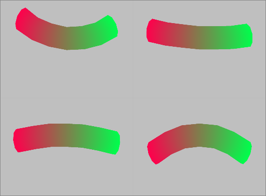
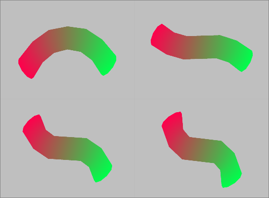

Skinning.h
The application loads four bones (i.e., matrix transformations) as uniform constants to the vertex shader and passes the weights in as texture coordinates. The bone matrices are created procedurally. The cylindrical tube continuously moves. The sequence in the images is from left to right, then top to bottom.
|  |
|  |